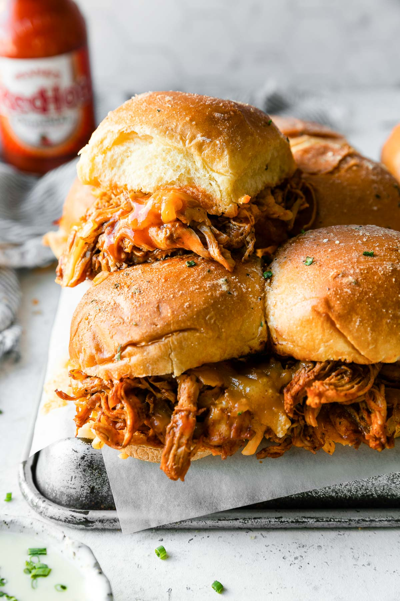

Buffalo Chicken Sliders

Description
Spicy, tangy, & perfectly handheld, these Easy Buffalo Chicken Sliders are the perfect game day snack! Shredded
ranch seasoned chicken is tossed in homemade buffalo sauce, layered on slider rolls with cheese, & baked into
gooey-melty-golden browned goodness. Best served with blue cheese or ranch dressing. An easy shareable snack made
with just 6 ingredients in 45 minutes or less, perfect for feeding a game day crowd!
Ingredients
- Frank's Red Hot Sauce
- Cream Cheese
- Hawaiian Rolls
- Shredded Chicken
- Sharp Chedder
- Mozarella Cheese
- Butter
Steps
- Season chicken and pan fry.
- Shred chicken with fork or mixer.
- Mix butter and hot sauce into the chicken.
- Cut the top half of the hawaiian rolls off and layer shredded chicken.
- Layer cheese on top of the chicken.
- Cover the rolls with the top.
- Brush mixture of butter, parmesan, garlic powder, and parsley flakes on buns.
- Bake at 350F until cheese is melted.